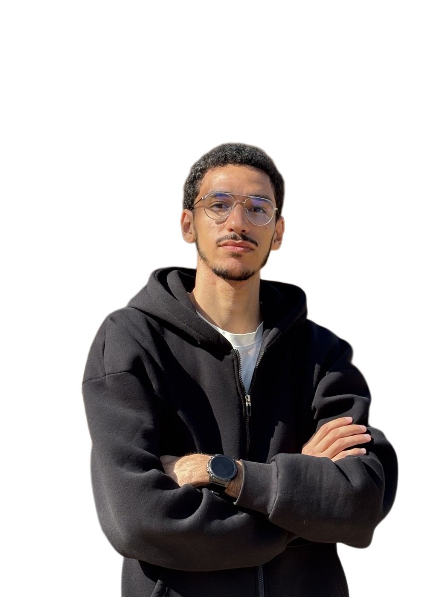

Full-stack
development
Turning ideas into connected web experiences, from responsive interfaces to backend services.
DEVELOPER. EXPLORER. WORK IN PROGRESS.
I’m Adam. I build thoughtful software
and explore the intelligence behind it.

ADAM AAKIF BETTER THAN YESTERDAY.IDEAS, MADE TANGIBLE
Small experiments. Real interactions.
A glimpse into how I think.
Personal demos built for this portfolio. Client projects remain private.
A TOOLKIT, NOT A FINISH LINE
From the interface you see
to the systems underneath.
Turning ideas into connected web experiences, from responsive interfaces to backend services.
Thinking in systems. Designing clear structures and maintainable foundations.
Exploring how models learn, understand language, and turn information into useful signals.
Connecting raw data to understanding through pipelines, processing, and visualization.
THE PERSON BEHIND THE CODE
I’m Adam Aakif, a full-stack developer currently pursuing a master’s in AI and Big Data.
My path started with web development, grew through Java and software architecture, and now continues into intelligent systems and data. I like understanding how things work—and finding ways to make them better.
I don’t need to have every answer today. Just the curiosity to keep looking, the discipline to keep building, and the intention to be better than yesterday.
Bac+2 · Web development
Licence · Java & software engineering
Master’s · AI & Big Data
BEYOND THE SCREEN
Not everything needs to be productive.
Some things just make you feel alive.
Football. Basketball. Formula 1.
Talent is inspiring. Dedication stays with me.
Physics, space, philosophy, history.
There’s always more to understand.
Cars, form, and motion.
Where precision becomes emotion.
OPEN TO THE NEXT CHAPTER
A role, an internship, a freelance project, or a good conversation.
I’d love to hear what you have in mind.